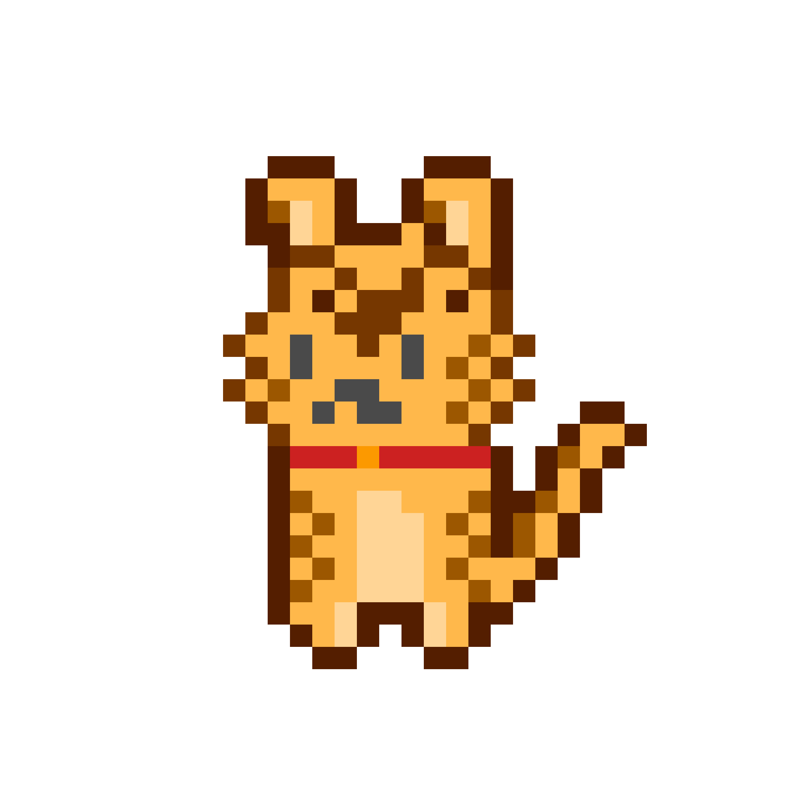

01
回答が分かれた傾向を、別の場面でもう少し確認します。
診断データを読み込み中…
相場での考え方や過ごし方から、あなたに近いタイプを診断します。
第1問（最大15問）
回答が分かれた傾向を、別の場面でもう少し確認します。
YOUR STOCK TYPE

ページを再読み込みして、もう一度お試しください。
最大15問であなたに近い株クラタイプを32種類から診断。相場での考え方や過ごし方を5つの傾向で振り返る、無料ブラウザ性格テストです。
所要時間は約2〜3分。結果では性格、強み、気をつけたいことを紹介します。娯楽用の診断です。
Explore your stock-market personality in a free Japanese browser quiz. Answer up to 15 questions and discover one of 32 types across five personality tendencies.
Takes about two to three minutes. Results describe personality, strengths and things to watch for. A quiz for entertainment, not investment advice.
Free to play in your browser. No app installation required. The game dialogue is in Japanese.